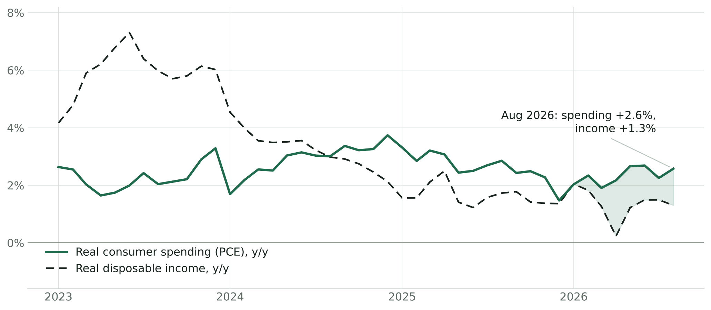
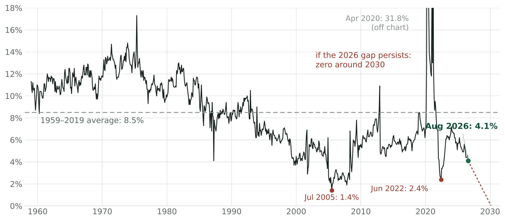
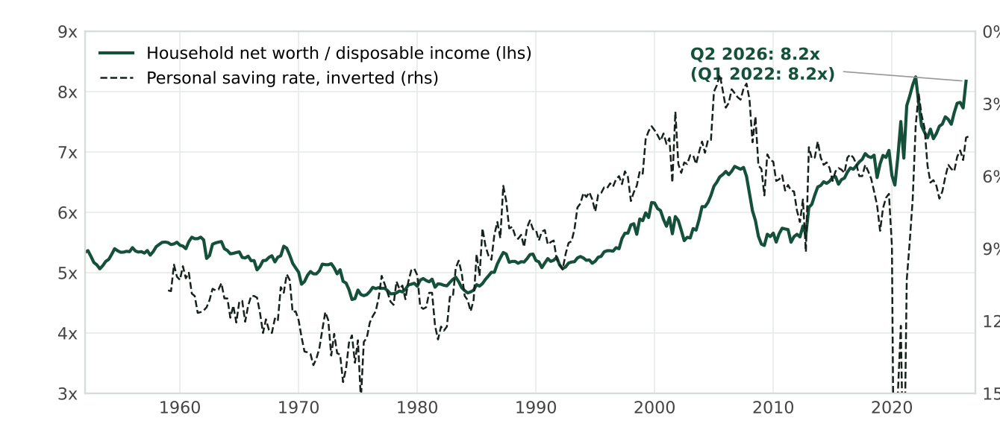
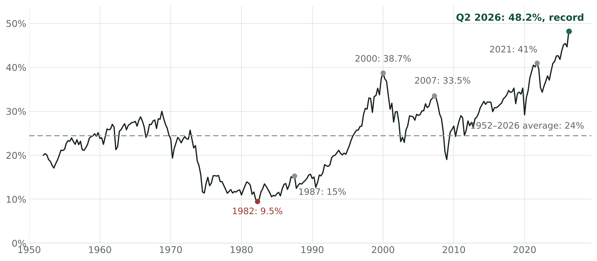
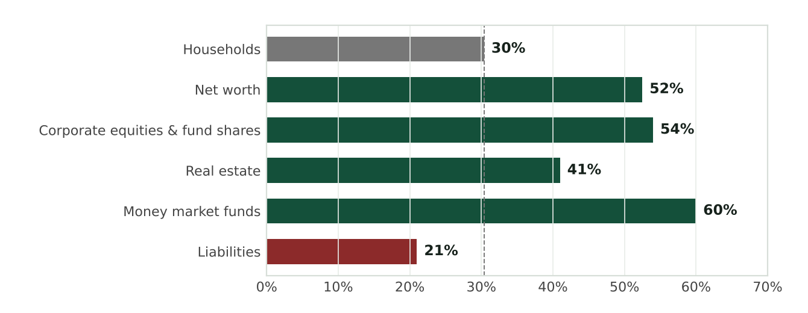
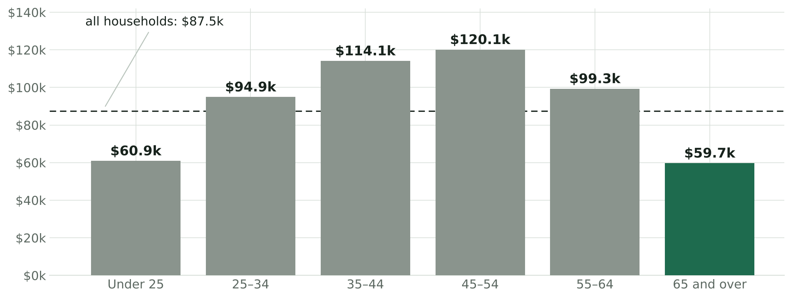
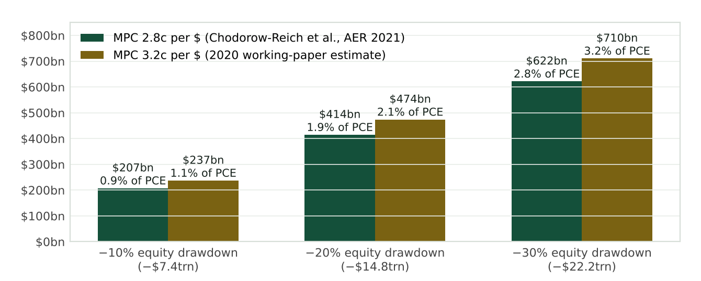
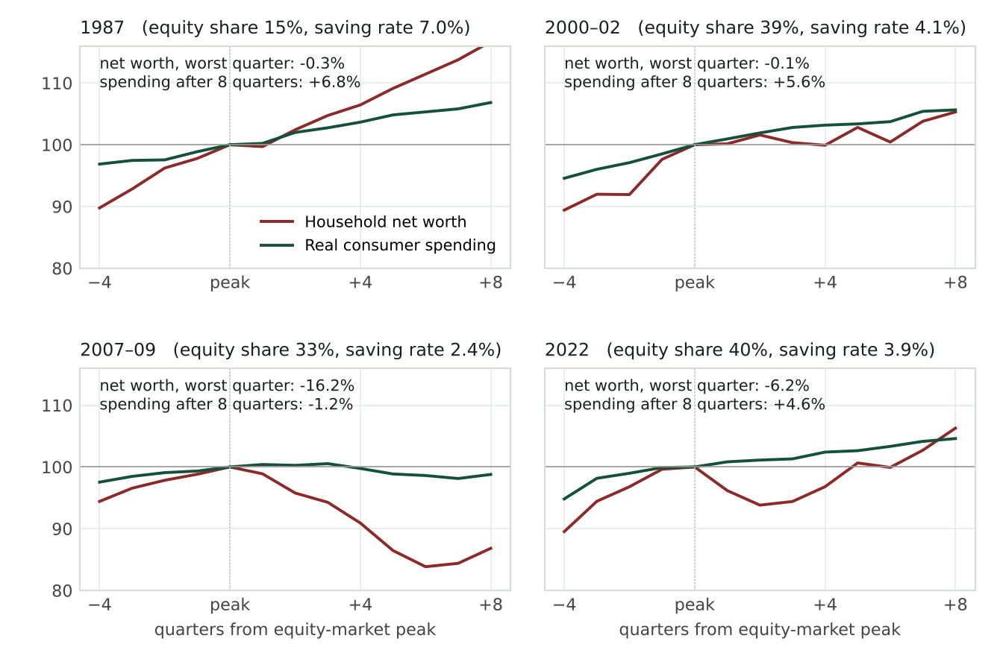
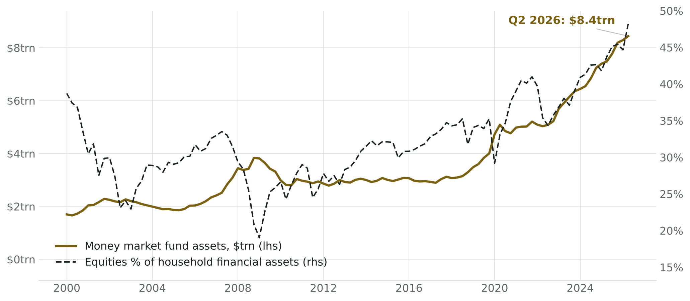

Macro · Consumers and asset prices
The Balance-Sheet Consumer: Spending the Portfolio
On 9 October the consumer sentiment index, published by the University of Michigan, printed at 46.3, and its current-conditions component reached an all-time low of 44.7. This is in spite of the fact the S&P 500 closed within 0.1% of a record earlier in the week and the Bank of America reported card spending was up 6.2% from a year ago on a per household basis (the third-strongest reading in four years). While some attribute this to the 'resilience' of the American consumer, I believe a more accurate depiction is that the consumer is increasingly spending out of accumulated wealth rather than wages.
This piece will attempt to do three things: set out how spending has come to run ahead of income and where the money is coming from; show who holds the assets doing the funding and why the age of the holder matters; and put today against the four prior episodes in which a wealth boom reversed, with signposts fixed in advance.
| Reading | Latest | Where it sits historically |
|---|---|---|
| 1 · Spending vs income | Real consumer spending +2.6% y/y, real disposable income +1.3%; spending has outgrown income in seven straight months | Longest run since the 2022 drawdown |
| 2 · Saving rate | 4.1% in August, lowest since November 2022; 1959–2019 average 8.5% | Bottom decile of the postwar range |
| 3 · Net worth to income | Household net worth $195.9trn, 8.2x disposable income | Tied with the Q1 2022 record |
| 4 · Equity exposure | Equities 48.2% of household financial assets, $74trn | Record; 2000 peak was 38.7% |
Readings as of the latest releases: BEA personal income (30 September), Fed Z.1 (11 September), Census (September). Full definitions below.
Spending Is Outrunning Income
Real consumer spending rose 2.6% in the year to August against 1.3% for real disposable income. This is the seventh consecutive month in which spending growth has exceeded income growth, and in August, real income did not grow at all (chart). Since early 2020, real spending is up 19% against 16% for income. Naturally, when outlays grow faster than income, the saving rate falls: it reached 4.1% in August, the lowest reading since November 2022 and down from 5.6% in January.

Real personal consumption expenditures and real disposable personal income, y/y, monthly to August 2026. Shading marks the months since February in which spending growth exceeded income growth.
I must say two things about that number before I continue. First is that it is not low based on the standards of the last two cycles: the record is 1.4% in July 2005, at the peak of housing-equity withdrawal, and the 2022 low was 2.4% (chart). Second is that the BEA's annual update on 30 September actually revised the saving rate up for 2022–25 and early-2026 income on better wage data: July was first published at 3.0% and now stands at 4.6%, and the 'April at 2.6%' figure that circulated over the summer no longer exists. Much of the dissaving narrative of June and July was built on a vintage that has since been retired.

Personal saving rate, monthly, 1959–August 2026, with the arithmetic extrapolation of the current spending–income gap.
While the revision does push back the point at which we reach a zero saving rate, from 2028 to early 2030, it doesn't change the direction: spending is 92% of disposable income and is still growing 1.3 points faster than income. It also shows how little a seven-month trend can tell us, as a single annual update moved the date by eighteen months.
The Wealth Behind It
Households are saving less, but they don't look stressed. The New York Fed reports that 4.7% of household debt is delinquent – this figure has been relatively stable. Card utilisation is declining, and lower-income wages are growing the fastest. Household debt is also around 90% of disposable income, close to its lowest since the late 1990s outside of the pandemic. Ultimately, none of this points to financial strain. This is why I believe spending is running ahead of income because households are spending out of accumulated wealth.
Household net worth reached $195.9trn in Q2, up $12.8trn in three months, of which $10.7trn came from the rise in equity prices. Relative to disposable income it stands at 8.2x, tied with Q1 2022 for the highest reading on record. The Fed's own September release called it a record, before the BEA's income revision shaved the ratio down slightly (chart). The relationship on the chart is one of the oldest in household economics: when wealth is high relative to income, people save less out of that income, because their wealth is already doing some of the saving for them. The Fed describes this ratio as a measure of households' potential to finance consumption out of wealth, and that is what we are now seeing.

Household and nonprofit net worth divided by disposable personal income (quarterly, 1952–Q2 2026) against the personal saving rate, inverted.
What makes this cycle different is the composition of the wealth. Corporate equities, held directly and through funds and pensions, are now 48.2% of household financial assets – this is $74trn out of $153.5trn (chart). The dot-com peak was 38.7%, 2007 was 33.5%, and the 2021 high was 41%, and the 1952–2026 average is 24%. In contrast, cash and deposits are only about 13% of financial assets. In Q2 alone the equity share jumped 3.6 points, almost all through price rises. Households did not buy their way to this allocation; the market carried them there.

Corporate equities (directly and indirectly held) as a share of household and nonprofit financial assets, quarterly, 1952–Q2 2026.
Who Holds It
The Fed's Distributional Financial Accounts put Baby Boomer net worth at $97.4trn in the second quarter, 52.5% of the total, from just 30% of households (chart). Including the Silent Generation, people over about 60 hold roughly two-thirds of American wealth. Boomers own around 54% of corporate equities and fund shares, 41% of real estate and roughly 60% of money-market balances, but only about a fifth of household debt. They own a large share of nearly every asset and owe very little.

Baby Boomers' (born 1946–64) share of US households and of selected household balance-sheet items, Q1–Q2 2026. Dashed line marks the household share.
They are also the generation leaving the labour force. Households headed by someone aged 65 or over now number 41.9 million, 30.6% of the total, up from 19.4% in 1967, and their median income of $59,680 in 2025 is half the $120,100 of a household aged 45 to 54 (chart). As the share of retirees rises, aggregate income growth is pulled down even if nobody's circumstances change. Spending isn't pulled down in the same way, because a retiree spends out of the wealth they have built up and the income it produces rather than out of a wage.

Median household income by age of householder, 2025.
In the national accounts, Social Security, interest, dividends and pension benefits all count as disposable income: realised capital gains, home-sale proceeds and withdrawals from 401(k)s and IRAs do not. This means that when a household spends money from those sources, the measured saving rate falls by the same amount, and the taxes paid on them reduce measured income on top of that. Part of the fall in the saving rate during an equity boom is therefore just the accounting showing a population spending its portfolio, which is why a falling saving rate should not be read as households in distress.
The Boomer share of wealth peaked around 55% in the mid-2010s and has slipped only three points since, even as the cohort's share of households fell from 36% to 30%, which does not look like a generation liquidating its assets. Survey evidence since Poterba's early-2000s work shows retirees drawing down financial assets only gradually, and the money-fund balances held by the same households are still rising. Spending is being funded by income on wealth, gradual withdrawals and the wealth effect, not by forced sales of principal.
Resilience and Fragility Are the Same Fact
This is the point I think the consensus has not followed through on. If spending is sustained by asset values, it is exactly as robust as asset values are. The best estimate of the stock-market wealth effect, from Chodorow-Reich, Nenov and Simsek, is that a dollar of equity wealth raises annual spending by 2.8–3.2 cents over roughly two years. Applied to $74trn of household equities, a 10% fall in the market gives a $207bn cut in annual spending, about 0.9% of the $22.3trn total. A 20% fall gives $414bn (1.9%), and a 30% fall gives $622bn (2.8%) (chart).

Implied reduction in annual consumer spending from an equity drawdown, applied to $74.0trn of directly and indirectly held household equities (Q2 2026) and expressed against $22.3trn of nominal PCE.
For scale, 2022 saw a fall of roughly 20% and removed around $15trn of household wealth. Over two years, that takes about 2% off annual spending, which is most of the 2.6% at which real consumption is growing. A 30% fall would take off more than all of it, before any second-round effect through employment.
It can be argued that an asset-rich retiree population spending its wealth is healthy, that a sub-zero saving rate would not be alarming, and that higher rates raise this cohort's income because it holds the cash. I believe that, too. My disagreement is not about whether today's spending is sustainable; it is about what the spending is sensitive to, and the sensitivity is at a record.
The Four Reversals
Four postwar episodes tested a wealth-supported consumer with a large equity drawdown, and they resolved very differently (chart).

Household net worth and real consumer spending indexed to 100 at the quarter of the equity-market peak, four quarters before to eight quarters after. The equity share and saving rate shown are the readings at the peak quarter.
1987: The S&P 500 fell by a third in two months, but household net worth dipped only 0.3% in the quarter. Equities were just 15% of financial assets, and most of the rest of household wealth was in housing and deposits that did not move. Consumption still grew 3.6% over the following year, because so little of what households owned was exposed to the crash.
2000–02: The S&P 500 halved, yet household net worth was flat eight quarters after the peak, because house prices rose about as fast as equities fell. Consumption slowed but never fell, and the recession was mild, since housing took up the shock that equities delivered.
2007–09: Housing and equities fell together, so household net worth dropped 16% and nothing offset the loss. Real consumption was still below its peak two years later, the only sustained decline in the postwar record, and the debt sitting behind housing made it worse.
2022: Equities and bonds fell together and household net worth dropped 6%, but real consumption kept growing at 2.4% a year. Three things cushioned it: excess savings built up during the pandemic, real wages that grew as inflation fell, and a housing market that held up. None of those is as large today.
The Structural-Seller Question
Naturally, the next test is to ask whether this older group who are highly concentrated in equities will become a steady seller in the future. The literature that makes the claim that they will has a poor record. The 'asset meltdown' hypothesis of Poterba (2001), Abel (2001) and Geanakoplos, Magill and Quinzii (2004) projected that Boomer retirement would take the S&P 500 price-earnings ratio from about 15 in 2010 to about 8 by 2025. Instead the multiple is 19 times forward earnings and the index is at a record, and the Fed's own follow-up conceded that the relationship disappeared after 2011. Buybacks of about a trillion dollars a year, a pension system that automatically puts 79 cents of every contribution dollar into equities, foreign demand and earnings growth all turned out to be bigger than the selling from retirees, which is gradual anyway.
However, the evidence does support something more useful: demographics have shifted who now bears the risk. The typical holder of American equities is older, more dependent on the holdings for personal consumption, and more likely to respond to a drawdown by cutting spending than cutting contributions. Furthermore, the cushion of price-insensitive buyers has thinned recently: buyback growth has flattened as hyperscaler capital spending absorbs the cash that funded it, while the money that would replace it sits in money funds held by the same older households, who have been adding at 4% rather than drawing down (chart). Money-market assets are $8.4trn on the Fed's Q2 count and still making weekly highs in the ICI data. Ultimately, the sideline is not being deployed into equities; it is being held by the people who already own most of them.

Money market fund total financial assets, quarterly, against the equity share of household financial assets, 2000–Q2 2026.
How 2026 Compares
Compared with the four reversals, today starts from the most exposed position on every measure (table). The equity share of household financial assets is ten points above its 2000 peak, and net worth relative to income matches the record. Nothing else is rising to offset a fall in equities the way housing did in 2000–02, since housing is already worth $49.8trn and is flat in real terms. The cushion from interest rates is gone too: with the 10-year at 5.24% and the forward multiple at 19, the earnings yield on stocks (about 5.3%) is the same as the yield on Treasuries, which has not been true since the dot-com era. And the Fed is tightening, as it was in 2000 and 2022, with a hike delivered in September and another priced for December.
| Episode | Equities, % of financial assets | Net worth / income | Saving rate | Earnings yield less 10-yr | Fed at the peak | Net worth trough | Spending after 8 quarters |
|---|---|---|---|---|---|---|---|
| 1987 | 15% | 5.3x | 7.0% | about −4pp | Hiking | −0.3% | +6.8% |
| 2000 | 38.7% | 6.2x | 4.1% | about −2.5pp | Hiking | −0.1% in 8q; −1.6% by Q3 2002 | +5.6% |
| 2007 | 33.0% | 6.7x | 2.4% | about +2pp | Cutting | −16.2% | −1.2% |
| 2022 | 39.7% | 8.2x | 3.9% | about +3pp | Hiking | −6.2% | +4.6% |
| 2026 | 48.2% | 8.2x | 4.1% | about 0pp | Hiking | — | — |
Readings at the quarter of each equity-market peak; 2026 uses Q2 Z.1 data and 9 October market levels. Forward P/E history is approximate.
Two things here cut the other way. The biggest difference from 2007 is that household leverage is low. Earnings also are carrying prices at the moment, with forward earnings up 28% this year. This has led to multiple compression from 22 to 19, and as long as that line holds the wealth effect runs the right way. The bearish case is dependent on asset prices falling, and I am not arguing that they will or will not. Instead, what I am saying is that if they do, consumer spending will fall with them, so the 'resilience' we see today is only as strong as the market.
In Japan, we have already seen the demographic side of this play out to an extent. Horioka finds a close link between Japan's household saving rate and its dependency ratio (the number of retirees relative to workers): the saving rate fell from around 15% in the early 1990s to 1.1% in 2024 as retirees, who spend 10–15% more than they earn, grew in number relative to workers. This is the same fall in saving outlined above, played out over a period of 30 years. It does not tell us anything about asset prices, though. Japan's equity collapse came before the ageing sped up and its recovery came during it, and importantly it was a bubble, banking crisis or central bank doing the work each time. This means that Japan is a good comparison for the saving rate but not for the stock market.
Going Forward
Now we have laid out where we stand in the present moment, we can detail the things to watch – 'signposts', if you will – to track whether wealth continues to fund household spending.
| Signpost | Reads as | Next test |
|---|---|---|
| 1 · Saving rate | Three-month average below 3.5%: the gap is widening on revised data. Above 5%: balance-sheet funding is fading | 29 October (September income and outlays); 25 November |
| 2 · Equity share and net worth/income | Equity share above 48.2% or net worth/income above 8.2x: exposure still rising. Q3 gains make a new high likely | Fed Z.1 for Q3, 10 December |
| 3 · The cushion | 10-year above its 5.36% high with the forward multiple at 19x or more: earnings-yield spread negative for the first time since 2000 | Daily; 28 October FOMC |
| 4 · The marginal buyer | A y/y decline in S&P 500 buybacks, or retail money-fund assets below $3.0trn: the price-insensitive bid is thinning or the sideline is moving | S&P DJI quarterly buyback release; ICI weekly |
| 5 · Sentiment decoupling | Michigan current conditions below 45 with real spending growing above 2%: the portfolio/no-portfolio split is still the operative one | Michigan final, 23 October; Conference Board, 27 October |
Thresholds set 11 October 2026.
The September income and outlays report on 29 October will show whether August's flat real income was noise or the composition effect arriving. The 28 October FOMC decides whether the Fed keeps leaning on a financial-conditions index that reads as loose precisely because equities are high. Q3 earnings, under way from 13 October, decide whether the line holding the structure up is still rising. For now, the summary is that the United States has the most asset-dependent consumer in its history at a 5% risk-free rate – I do not believe the word for that is resilience.
Sources
- FRED (BEA / Board of Governors): PCEC96, DSPIC96, PCE, DSPI, PSAVERT, PMSAVE, TNWBSHNO, DPI, BOGZ1FL153064486Q, PCECC96, MMMFFAQ027S, SP500, DGS10; pulled 11 October 2026 (30 September 2026 BEA vintage).
- BEA, Personal Income and Outlays, August 2026 (30 September 2026) and Survey of Current Business, "2026 Annual Update of the National Economic Accounts" (September 2026).
- Federal Reserve, Financial Accounts of the United States (Z.1), Q2 2026 (11 September 2026); Distributional Financial Accounts, Q2 2026 (18 September 2026).
- Census Bureau, Income in the United States: 2025 (September 2026), Table H-10.
- Federal Reserve Bank of New York, Quarterly Report on Household Debt and Credit, Q2 2026 (11 August 2026); Liberty Street Economics, "How Distressed Are Consumers?" (August 2026).
- Bank of America Institute, Consumer Checkpoint, September and October 2026. University of Michigan Surveys of Consumers, October 2026 preliminary.
- Chodorow-Reich, Nenov and Simsek, "Stock Market Wealth and the Real Economy: A Local Labor Market Approach," American Economic Review 111(5), 2021; NBER WP 25959.
- Poterba, "Demographic Structure and Asset Returns," Review of Economics and Statistics, 2001; Abel (2001); Geanakoplos, Magill and Quinzii, Brookings Papers, 2004; Liu and Spiegel, "Boomer Retirement: Keys to Asset Prices?", FRBSF Economic Letter 2011-26.
- Horioka, "The Impact of Population Aging on Japan's Household Saving Rate," Kobe University RIEB Discussion Paper 2026-02 (January 2026).
- ICI, Money Market Fund Assets (8 October 2026) and Quarterly Retirement Market Data, Q2 2026. Vanguard, How America Saves 2026. S&P Dow Jones Indices, S&P 500 buyback releases. Yardeni Research, Morning Briefing, 12 October 2026 and QuickTakes, 10 October 2026. Barclays, Global Economics Weekly, 9 October 2026.